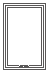

OUR PRODUCTS
Sliding- 
Casement
Tilt and Turn
Combination
Villa
Bay
Fixed
Glass to Glass
SLIDING WINDOW
Sliding windows features two (or more) horizontal sashes fitted with rollers at the bottom for swift sideways movement on tracks. Easier and faster to operate, they are great for air circulation and panoramic views. A popular choice for contemporary styled homes sliders bring finesse to the room while satisfying all its fenestration requirements.
FEATURES & BENEFITS :
- Improved ventilation as sashes can be moved left or right
- Low friction between rollers and track for smooth sliding motion
- Multi-track and sash options to cover larger spans
- Available in variety of designs, colours and hardware
- Optimised space usage as the sashes slide and do not open inwards
- Air-tight seals to keep out noise, dust, heat and pollution.
- Monsoon track for heavy rains, and hurricane bars for high speed winds
RECOMMENDED FOR :
Bedrooms, Balconies, Large/Tall openings
AVAILABLE COLORS :
CASEMENT WINDOW
One of the most popular upvc window styles, the casement windows is your picturesque offering the maximum unobstructed view of outside. It features a sash that is hinged from the side on an outer frame and can open inwards or outwards, to the left or right, allowing maximum flow of air into the room. Extremely energy efficient when closed, this casement window comes in varied designs like side hung, top hung etc.
FEATURES & BENEFITS :
- Super sound insulation and highly energy efficient
- Double sealing to keep out noise, dust and pollution
- High quality hardware that does not rust or corrode
- Multi-point locking for enhanced security
- Double/triple glazing options for better thermal and sound insulation
- Protects against rain water seepage and storms
- Available in variety of designs, colours and hardware
RECOMMENDED FOR :
Bedrooms, Kitchen, Study rooms, Bathrooms and AC Rooms
AVAILABLE COLORS :
TILT TURN WINDOW
A versatile window with state-of-the-art design, Tilt and turn windows features a sash that can tilt open at an angle from the top with hinges at the bottom or swing inwards with hinges on the side. Advanced engineering facilitates both these operations with simple turn of a single handle. A perfect mix of design and functionality this innovative window when in closed position has the classic, aesthetically pleasing appearance of a picture window.
FEATURES & BENEFITS :
- Contemporary and stylish
- Tilt position allows draft-free ventilation and rain protection
- Turn position offers maximum ventilation, egress opening and quick cleaning
- Brings maximum sunlight, insulation and aesthetics
- Energy saving design, easy to use and long lasting
- Keep your home peaceful with noise insulation
- Triple glass option for better insulation
- Weather resistant; Not prone to rust, termite, corrosion or fading
RECOMMENDED FOR :
Bedrooms, Living Rooms, Washrooms, Ideal for Small Spaces
AVAILABLE COLORS :
COMBINATION WINDOW
An integration of sliding, casement and fixed window or two windows of the same type (like casement-casement) or different types (casement-slider or fixed-slider), combination windows can be made available in a variety of sizes and designs as per your need. The advantage is that all the windows are built into one attractive, strong, integrated frame. It not only serves the perfect utilitarian purpose of sound and thermal insulation, design flexibility but also creates an architectural feature in the home.
FEATURES & BENEFITS :
- Greater freedom with shape, style or size
- Designed to maximize natural lighting and energy efficiency.
- Steel reinforced frames for added strength
- Integrated bug mesh for protection against insect
- Hurricane bar to withstand high speed winds
- Rain track and sill arrangement to insulate against rains
- Excellent aesthetics and long last durability
- Air-tight seals to keep out noise, dust, heat and pollution
RECOMMENDED FOR :
High Rise Apartments, Wide/Tall Apertures and Bedrooms

AVAILABLE COLORS :
VILLA WINDOW
A rare combination of style, substance, sealing and security: The only UPVC casement in the world with a twin sash, a bug mesh and a grill built into the system. It's an innovation engineered specifically for Indian conditions to protect you from insects and theft without sacrificing ventilation, while providing all the standard benefits of a casement window, making it a complete solution for Indian homes
FEATURES & BENEFITS :
- Extremely energy efficient
- Protection from insects, mosquitoes and theft
- Dual seals and multi-chambered design to reduce heat loss and noise infiltration
- Insulation from rain, dust and pollution
- Fusion welded frame and corners ensure strength
- Multi-point locking system for total security
- Weather resistant, Low maintenance and easy to clean
- Pre-fabricated and factory fitted for quality and consistency
RECOMMENDED FOR :
High Rise Apartments, Bedrooms and Living rooms
AVAILABLE COLORS :
BAY WINDOW
Perfect for creating a private little corner in your home for yourself, Bay window is a combination of three or more windows that projects outward from the main walls forming a bay in a room, either square or polygonal. The projected windows can be at various angles with each other. Elegant and attractive, it is one of the most sophisticated window designs known for its beauty and functionality.
FEATURES & BENEFITS :
- Up to eight sides possible in combinations of fixed, casement and sliders.
- Expands the view of the room and adds grace
- Superior sound insulation
- Dual sealing keeps out rain, dust and pollution
- Safe, secure and extremely energy efficient
- Weather resistant; Not prone to rust, termite, corrosion or fading
- Durable and Built to last
RECOMMENDED FOR :
Bedrooms, Living rooms and ideal for small spaces
AVAILABLE COLORS :
FIXED WINDOW
Fixed windows popularly known as picture windows are stationary, non-opening windows intended to allow light into the room, offer an unobstructed view of outside and enhance the aesthetic of a home. It can also be paired with other window types to create a unique style statement.
FEATURES & BENEFITS :
- Provides a clear unhindered view of outside
- Allows maximum sunlight
- Extremely energy efficient
- Offers superior sound insulation
- Keeps out noise, dust, heat and pollution with its air-tight seals
- Protects against rain water seepage and storm
- Available in variety of designs, colours and hardware
RECOMMENDED FOR :
Any type of room or architectural style - classic to contemporary
AVAILABLE COLORS :
GLASS TO GLASS WINDOW
Glass-to-glass window features a fixed window unit, where the glass panes meet at an angle of 90° and are neatly joined together without using any mullions. Contemporary and stylish, this window style offers spectacular seamless view, brings in maximum sunlight, while adding a whole new architectural dimension to the home.
FEATURES & BENEFITS :
- Large panoramic view without any hindrance from corner posts or joints
- Allows maximum sunlight no matter the time of day
- Creates a sense of space and openness in the room
- Adds elegance to the home by becoming a design focal point
- Creates an attraction from outside as well as indoors
- Gives a sense of unity with nature while providing protection from the elements
- Prevents dust build up and entry of unwanted pollutants into the home
RECOMMENDED FOR :
Perfect for any corner room of the house
AVAILABLE COLORS :


{kind=link}
© 2017 E WINDOWS